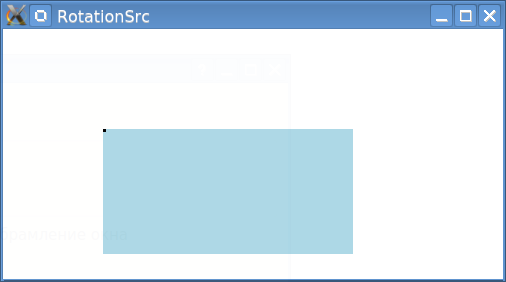
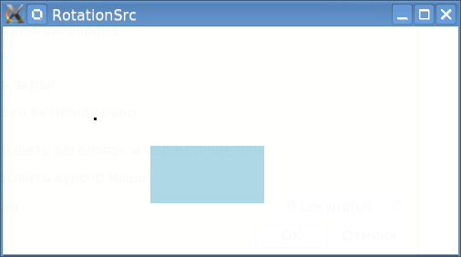
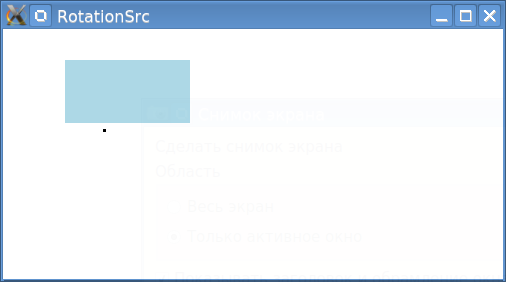
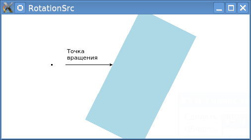
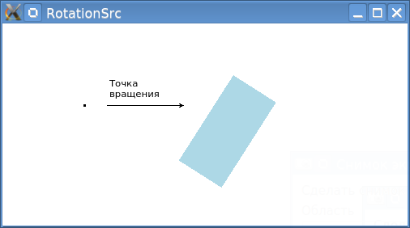
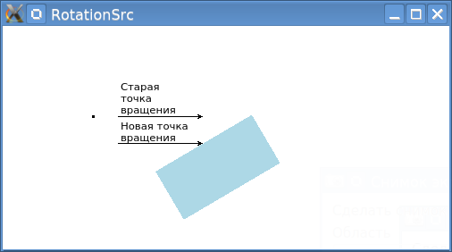
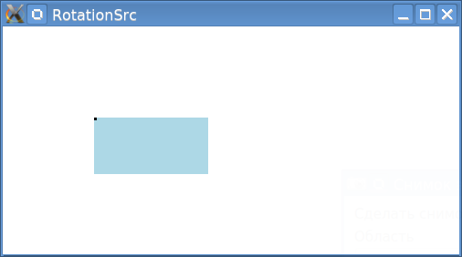
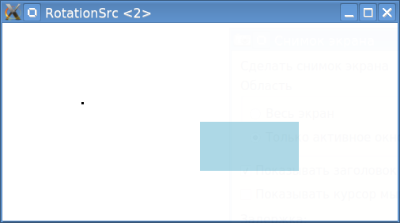
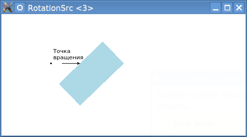

С размещением графических элементов в QML довольно легко управляться. Но ровно до того момента, пока не возникает необходимости изменять их масштаб (свойство scale). Элемент, у которого изменен масштаб, начинает вести себя неадекватно при любых изменениях его привязки и положения. И с этим надо разобраться.
Масштабирование
Вначале надо понять, как происходит масштабирование элемента. Чтобы это понять, необходимо вначале отобразить несмасштабированные элемент. Вот код, с которым будем экспериментировать:
Window {
visible: true
width: 500
height: 250
Rectangle {
id: plate
x: 100
y: 100
width: 250
height: 125
color: "lightblue"
scale: 1.0
}
Rectangle { // Маленький прямоугольник для ориентира
x: 100; y: 100
width: 3; height: 3
color: "black"
}
}
Этот код выведет следующую картинку:

Теперь надо установить свойство scale со значения 1.0 на 0.5, и вот что получится:

Ого! Наблюдается очень необычное поведение: прямоугольник смасштабировался, но его размер в системе не изменился! Он все так же имеет размер 250x125, хоть на экране он в два раза меньше. То есть, изменилось только его отображение, а занимаемое им место осталось прежним! Другими словами, голубой прямоугольник не сдвинулся к маленькому прямоугольнику своим левым-верхним углом, а совпадает своим центром с центром несмаштабированного прямоугольника.
Может быть, такое поведение масштабированного объекта возникает только при задании координат? А что, если задать привязки? Может быть тогда полный начальный размер учитываться не будет? Надо проверить.
Для проверки надо заменить прямое задание координат (100, 100) на привязки к окну по левому верхнему краю:
// x: 100
// y: 100
anchors.top: parent.top
anchors.left: parent.left
И вот результат:

Прямоугольник все равно не прижался левым и верхним краем к краям окна. Точнее, прижалась его несмасштабированная область, а видимый смасштабированный прямоугольник, соответственно, нет.
Подытоживая все вышесказанное, можно сказать, что заданное значение scale не влияет на значения width и height. И это очень важно знать, чтобы в дальнейшем правильно понимать происходящее.
Вращение смасштабированного объекта
Для дальнейших действий нужно вернуть код к начальному состоянию, и добавить в него вращение прямоугольника. Вращение должно происходить вокруг верхней средней точки.
Rectangle {
id: plate
x: 100
y: 100
width: 250
height: 125
color: "lightblue"
scale: 1.0
transform: Rotation {
origin.x: plate.width/2
origin.y: 0
angle: 0
NumberAnimation on angle {
running: true
loops: Animation.Infinite
from: 0; to: 360
duration: 3000
}
}
}
Вот что получится:

А что получится, если прямоугольнику задать масштаб 0.5? Вокруг какой точки он будет крутиться? Если установить:
scale: 0.5
То получится следующее:

То есть, масштаб изменился, а точка вращения осталась прежней. И прямоугольник крутится не вокруг своей верхней средней точки, а вокруг верхней средней точки, которая получается когда прямоугольник не смасштабирован.
А как теперь задать верхнюю среднюю точку с учетом масштаба? Придется воспользоваться формулами. При написании формул надо помнить, что значения точки вращения origin.x и origin.y задаются в координатах несмасштабированного прямоугольника.
Для координаты X в данном случае специальная формула не нужна, потому что прямоугольник смасштабировался "к центру", и его горизонтальный центр никак не сместился. Расчет X остается как есть.
А для координаты Y можно воспользоваться формулой:
origin.y: (plate.height-plate.height*0.5)/2
Где 0.5 - это и есть коэффициент масштабирования. Теперь отмасштабированный прямоугольник будет вращаться вокруг своего видимого центра верхней грани.

Как обойтись без вычислений и упростить себе жизнь
Свойство scale, как показано выше, достаточно неуклюжее чтобы работать в паре с вращением, когда дело касается вращения не вокруг центра элемента. Вместо свойства scale можно применять трансформацию Scale, которая работет более гибко.
Во-первых, в трансформации Scale можно задавать раздельный масштаб по оси X и Y с помощью свойств xScale и yScale. Во-вторых, можно задавать центр масштабирования (свойства origin.x и origin.y), относительно которого будет меняться масштаб. Центр масштабирования - не совсем понятное понятие :), поэтому вот вольный перевод из официальной документации:
Это свойство удерживает точку, из которой объект масштабируется (то есть обозначает точку, которая остается фиксированной относительно родителя по мере роста/уменьшения остальной части).
По-дефолту, значения origin.x и origin.y для трансформации Scale равны 0. То есть, дефолтное масштабирование в трансформации Scale идет относительно левой верхней точки. И это отличается от дефолтного масштабирования с помощью свойства scale, которое масштабирует относительно геометрического центра объекта! Поэтому, если задать масштаб 0.5 не через свойство объекта scale, а через тренсформацию Scale, то результат будет таким:
Код:
Rectangle {
id: plate
x: 100
y: 100
width: 250
height: 125
color: "lightblue"
transform: Scale {
xScale: 0.5
yScale: 0.5
}
}
Снимок экрана:

Видно, что результат отличается от того, что давало изменение свойства scale. А все потому, что свойство scale меняет масштаб относительно центра обекта, а трансформация Scale - относительно origin.x и origin.y, которые равны 0.
На всякий случай надо проверить, а изменились ли ширина и высота объекта при применении транформации? Для проверки надо прижать его к правому нижнему краю:
// x: 100
// y: 100
anchors.bottom: parent.bottom
anchors.right: parent.right

А размер объекта все так же не изменился. То есть, трансформация Scale тоже не влияет на свойства width и height трансформируемого объекта.
Теперь можно начать вращать объект. И делать это можно с помощью цепочки трансформаций. Причем, последовательность действий должна быть следующей:
Вот как это выглядит в коде:
Rectangle {
id: plate
x: 100
y: 100
width: 250
height: 125
color: "lightblue"
transform: [
Rotation {
origin.x: plate.width/2
origin.y: 0
angle: 0
NumberAnimation on angle {
running: true
loops: Animation.Infinite
from: 0; to: 360
duration: 3000
}
},
Scale {
xScale: 0.5
yScale: 0.5
}
]
}
Цепочка трансформаций указывается в виде массива (а точнее, списка) трансформаций. Список трансформаций оформляется с помощью прямоугольных кавычек [ ], где элементы перечисляются через запятую (запятую, кстати, можно не ставить). Трансформации применяются в последовательности их перечисления.
Вот что получится в результате:

В данном варианте никаких специальных формул не применалось, и результат получился более ожидаемым.